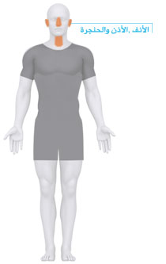
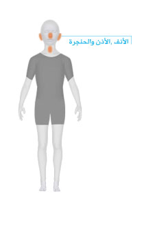

ابدأ باختيارالفئة

اختيار عضو من جسم الرجل
- الرأس والعنق
- العيون
- الأنف والأذن والحنجرة
- الصدر والظهر
- الذراعين واليدين
-
البطن والحوض
- علاج ارتداد حمض المعدة
- غازات الامعاء
- الدم في البول عند الرجال
- فحص سرطان القولون
- الامساك عند الكبار
- الاسهال
- صعوبة التبول
- ضعف العضلات
- الم مفصل الحوض
- فقد السيطرة على التبول عند الرجال
- ورم او الم في كيس الخصيتين
- كثرة التبول او التبول المؤلم عند الرجال
- الم القضيب، قروحه، افرازاته او اورامه
- نزيف المستقيم
- الالم المتكرر في البطن
- الم البطن الشديد حديث الظهور
- مستضد البروستاتا
- الساقين
-
آخر
- القلق
- الاغماء او فقدان الوعي
- الضعف الجنسي لدى الرجال
- الاكتئاب
- الالتهاب العظمي المفصلي للركبة
- الالتهاب العظمي المفصلي للركبة
- دوران ظهر حديثا
- الخمول اثناء النهار
- جفاف الجلد
- الحمى عند الكبار
- النسيان، وفقدان الذاكرة
- علاج الجلد الجاف
- اختلال التوازن
- الحكة بدون طفح جلدي
- اليرقان عند الكبار
- الغثيان والتقيؤ
- التنميل او الوخز
- تحليل ايجابي لاضداد النوى (ANA-antinuclear antibody positive)
- ظاهرة رينود (Raynaud's)
- المشاكل الجنسية عند الرجال
- تورم في الغدد
- علاج العجز الجنسي
- الارتعاش
- زيادة الوزن بدون سبب معروف
- فقدان الوزن غير المقصود
- الالم العام


اختيار عضو من جسم المرأة
- الرأس والعنق
- العيون
- الأنف والأذن والحنجرة
- الصدر والظهر
- الذراعين واليدين
-
البطن والحوض
- علاج ارتداد حمض المعدة
- غازات الامعاء
- النزيف المهبلي بعد انقطاع الطمث
- النزيف بين دورات الحيض
- االدم في البول عند النساء
- فحص سرطان القولون
- الامساك عند الكبار
- الاسهال
- صعوبة التبول
- ضعف العضلات
- كثرة التبول عند النساء
- دورة شهرية غزيرة
- الم مفصل الحوض
- فقد السيطرة على التبول عند النساء
- الغثيان والتقيؤ مع الحمل
- عدم ظهور الحيض
- نزيف المستقيم
- الم المستقيم والحكة
- الم القضيب، قروحه، افرازاته او اورامه
- الالم المتكرر في البطن
- الم البطن الشديد حديث الظهور
- افرازات المهبل، الحكة او التهيج
- جفاف المهبل
- الم في المهبل
- قروح المهبل واورامه
- انقطاع الدورة الشهرية
- دورات الحيض المفقودة، او غير المنتظمة
- الساقين
-
آخر
- القلق
- تنظيم النسل (منع الحمل) لدى النساء
- الاغماء او فقدان الوعي
- الاكتئاب
- دوران ظهر حديثا
- الخمول اثناء النهار
- جفاف الجلد
- الحمى عند الكبار
- النسيان، وفقدان الذاكرة
- علاج الجلد الجاف
- الهبات الحرارية
- اختلال التوازن
- الحكة بدون طفح جلدي
- اليرقان عند الكبار
- الغثيان والتقيؤ
- التنميل او الوخز
- تحليل ايجابي لاضداد النوى (ANA-antinuclear antibody positive)
- ظاهرة رينود (Raynaud's)
- تورم في الغدد
- زيادة شعر الجسم والوجه عند النساء
- الارتعاش
- زيادة الوزن بدون سبب معروف
- فقدان الوزن غير المقصود
- الالم العام

اختيار عضو من جسم الطفل
- الرأس والعنق
- العيون
- الأنف والأذن والحنجرة
- الصدر والظهر
- البطن والحوض
-
آخر
- مقاعد السيارات
- الحمى عند الاطفال
- الحمى عند الرضع
- طفلي غير هادئ
- اليرقان (الصفراء) عند حديثي الولادة
- التقييم الغذائي للاطفال والرضع
- الطفح الجلدي عند الاطفال
- الطفح الجلدي عند حديثي الولادة
- خطر نقص الحديد عند الاطفال
- علاج نزلات البرد عند الاطفال
- علاج الثاليل عند الاطفال
- فقدان الوزن بدون سبب معروف عند الاطفال
- زيادة الوزن بدون سبب معروف عند الاطفال